Solutions
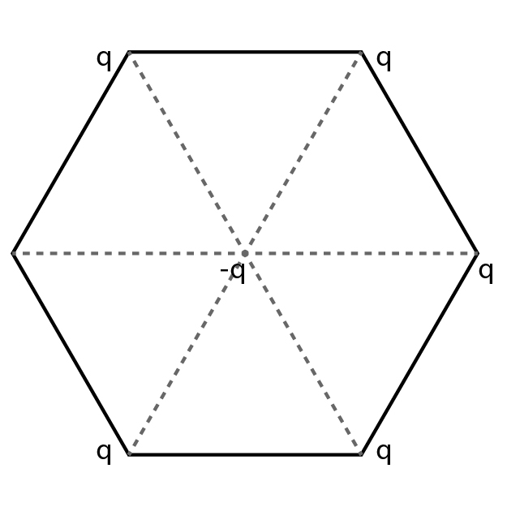
a) $\frac{5q^{2}}{4\pi \epsilon_{0}r^{2}}$
b) $\frac{3q^{2}}{4\pi \epsilon_{0}r^{2}}$
c) $\frac{-5q^{2}}{4\pi \epsilon_{0}r^{2}}$
d) $\frac{q^{2}}{4\pi \epsilon_{0}r^{2}}$
Solution
Among the five forces on the centre charge(-q), 2 pairs (four) of forces are cancelled because they are equal in magnitude and opposite in direction. The resultant force is shown in figure
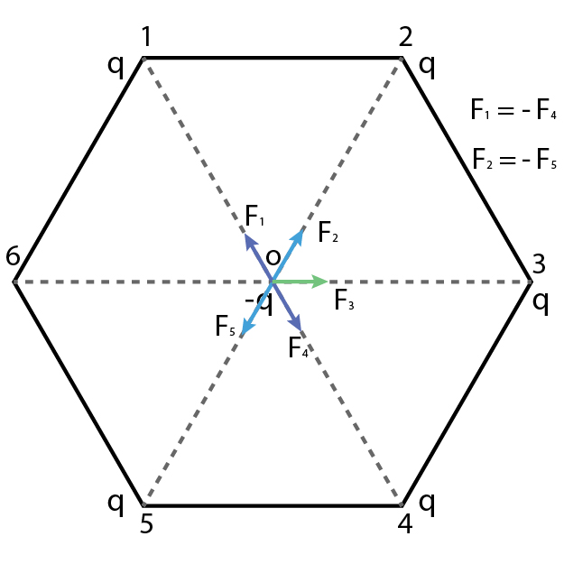
As all charges are equal. The magnitude of forces acting on the charge at O due to charges placed at 1, 2, 3, 4, 5 are equal
$\left | F_{1} \right |=\left | F_{2} \right |=\left | F_{3} \right |=\left | F_{4} \right |=\left | F_{5} \right |$
$=\frac{q^{2}}{4\pi \epsilon_{0}r^{2}}$
F1 =-F4 and F2 = - F5 so they cancels out and only F3 is remaining
Net force (is the vector sum of all forces) = $\frac{q^{2}}{4\pi \epsilon_{0}r^{2}}$
a) $ 0^{\circ}, \frac{Q^{2}}{16\pi\epsilon_{0}L^{2}}$
b) $90^{\circ}, \frac{Q^{2}}{4\pi\epsilon_{0}L^{2}}$
c) $ 180^{\circ}, \frac{Q^{2}}{16\pi\epsilon_{0}L^{2}}$
d) $0^{\circ} < \theta < 180^{\circ}, \; \frac{Q^{2}}{4\pi\epsilon_{0}L^{2}}$
Solution
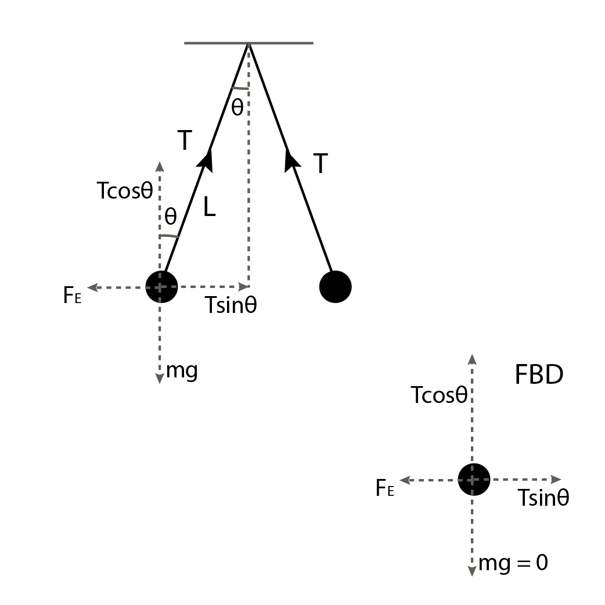
From free body diagram,
$T cosθ = mg = 0 $ (as g = 0, mg = 0)
$T sinθ = F_{E} =\frac{Q^{2}}{4\pi\epsilon_{0}r^{2}}$
$θ = 90° ---(Tcosθ = 0)$
The angle between the two strings = $2\theta = 180^{\circ} $
$ T =\frac{Q^{2}}{4\pi \epsilon_{0}\left ( 2L \right )^{2}} = \frac{Q^{2}}{16\pi \epsilon_{0}L^{2}}$
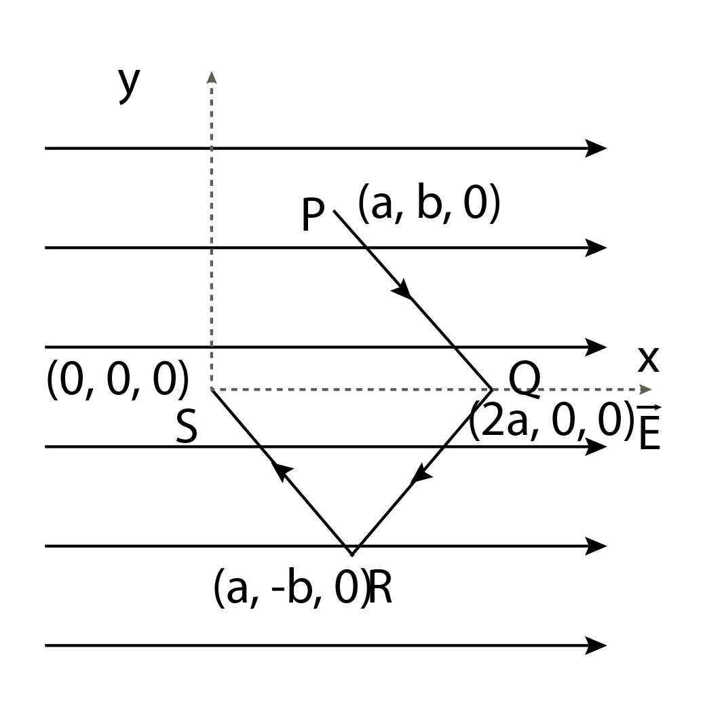
The coordinates of the points P,Q,R and S are (a,b,0), (2a,0,0),(a,-b,0),(0,0,0) respectively. The work done by the expressiona) Zero
b) –qEa
c) +qEa
d) qEb
Solution
As the field $\vec E$ is uniform, so E is constant at every point.
As E is directed parallel to x axis, so $\vec{E} = E\hat{i}$
Work done $w = \int \left ( F.dr \right )$
$\vec{F} = q\vec{E}$
$ w = \int qE\hat{i}\cdot \left ( \hat{i}dx+ \hat{j}dy+ \hat{k}dz\right )$
$= qE\int dx$
for the path PQRS,
$qE\int_{a}^{2a}dx+\int_{2a}^{a}dx+\int_{a}^{0}dx$
$=qE\left [ 2a-a+a-2a+0-a \right ]$
$= -qEa$
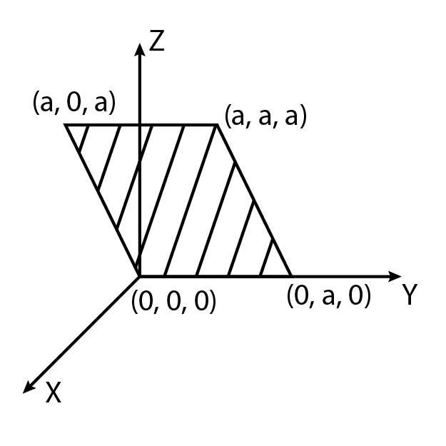
a) $2E_{0}^{2}$
b) $\sqrt 2E_{0}a^{2}$
c) $ E_{0}a^{2}$
d) $\frac{E_{0}a^{2}}{\sqrt2}$
Solution
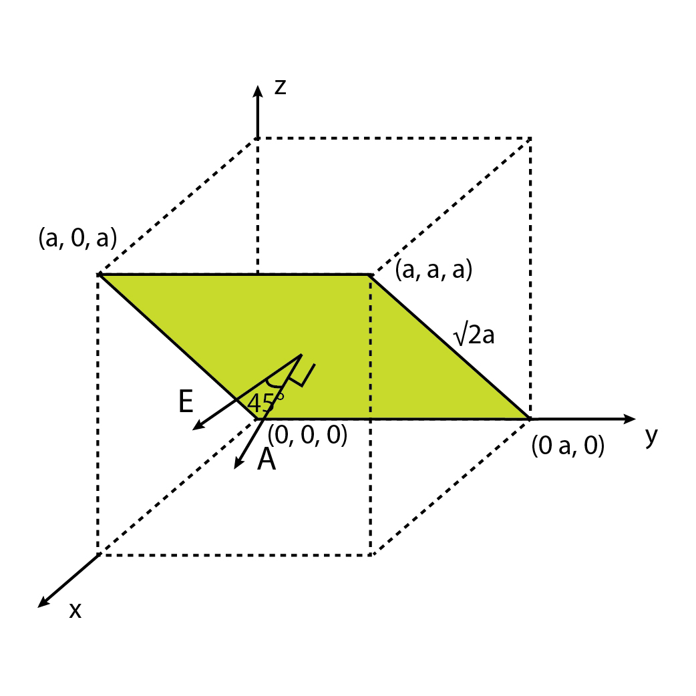
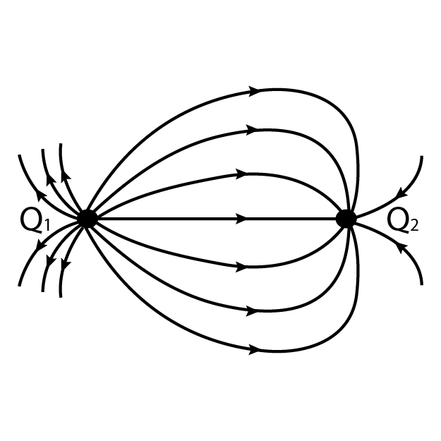
a) |Q1|=|Q2|
b) |Q1|<|Q2|
c) At a finite distance to the left of Q1 the electric field is zero
d) At a finite distance to the right of Q2 the electric field is zero
Solution
Q1 is positive as electric field lines are emerging from it. And Q2 is negative as electric field lines are terminating.
Number of Electric field lines emerging from Q1 are more than the number of lines terminating at Q2
So, Q1 is a positive charge of higher magnitude and Q2 is a negative charge of smaller magnitude.
Hence, the point at which the electric field is zero is on the right of the negative charge Q2
a) $ QA > QB$
b) $\frac{\sigma_{A}}{ \sigma_{B}} =\frac{ R_{B}}{R_{A}}$
c) $E_{A}^{surface}<E_{B}^{surface}$
d) All the options are correct
Solution
Electric field inside a spherical metallic shell with charge on the surface is always zero.
When the shells are connected with a thin metal wire then electric potentials will be equal, say V
$\therefore \frac{1}{4\pi \epsilon_{0}}\frac{Q_{A}}{R_{A}}=\frac{1}{4\pi \epsilon_{0}}\frac{Q_{B}}{R_{B}}$
$\frac{Q_{A}}{R_{A}}=\frac{Q_{B}}{R_{B}}$
$\frac{Q_{A}}{Q_{B}}=\frac{R_{A}}{R_{B}}$
As $ R_{A} > R_{B}$ therefore $Q_{A} > Q_{B}$ option [a] is correct.
$ \sigma_{A} = \frac{Q_{A}}{4\pi \epsilon_{0}R_{A}^{2}} and \sigma_{B} = \frac{Q_{B}}{4\pi \epsilon_{0} R_{B}^{2}}$
$\sigma_{A} = \frac{Q_{A}}{4\pi \epsilon_{0}R_{A}^{2}}$
$\sigma_{B} = \frac{Q_{B}}{4\pi \epsilon_{0}R_{B}^{2}}$
$\frac{\sigma_{A}}{\sigma_{B}} = \frac{Q_{A}}{Q_{B}}\frac{R_{B}^{2}}{R_{A}^{2}}$
$=\frac{R_{A}}{R_{B}}\frac{R_{B}^{2}}{R_{A}^{2}}=\frac{R_{B}}{R_{A}}$
$\frac{\sigma_{A}}{\sigma_{B}}=\frac{R_{B}}{R_{A}}$ Option (b) is also correct
Electric fields on the surface of shell and sphere are
$E_{A}= \frac{\sigma_{A}}{\epsilon_{0}}$
$E_{B}= \frac{\sigma_{B}}{\epsilon_{0}}$
$\frac{E_{A}}{E_{B}} = \frac{\sigma_{A}}{\sigma_{B}} < 1$
$\therefore E_{A} < E_{B} $
Option (c) is also correct
a) $Q=4\sigma \pi r_{0}^{2}$
b) $r_{0}=\frac{\lambda}{2 \pi \sigma}$
c) $E_{1}\left (\frac{r_{0}}{2} \right ) = 2E_{2}\left (\frac{r_{0}}{2} \right )$
d) $E_{2}\left (\frac{r_{0}}{2} \right ) = 4E_{3}\left (\frac{r_{0}}{2} \right )$
Solution
Electric field at a distance r from a point charge Q
$E_{1}(r) = \frac{Q}{4\pi \epsilon_{0}r^{2}}$
Electric field at r due to a long wire with linear charge density $\lambda$
$E_{2}(r) = \frac{2\lambda}{4\pi \epsilon_{0}r}$
Electric field at r due to an infinite plane with uniform surface charge density $\sigma$
$ E_{3}(r) = \frac{\sigma}{2 \epsilon_{0}}$
Given, $ E_{1}(r_{0})=E_{2}(r_{0})=E_{3}(r_{0})$
Considering $E_{1}(r_{0} and E_{3}(r_{0})$
$\frac{Q}{4\pi \epsilon_{0}r^{2}}=\frac{\sigma}{2 \epsilon_{0}}$
$ Q=2\pi \sigma r_{0}^{2} ---(1)$
(Option a is not correct)
Considering, $E_{2}(r_{0} and E_{3}(r_{0})$
$\frac{2\lambda}{4\pi \epsilon_{0}r} = \frac{\sigma}{2 \epsilon_{0}}$
$ r_{0}=\frac{\lambda}{\pi \sigma} ---=(2)$
(option b is not correct)
Considering, $E_{1}(r_{0} and E_{2}(r_{0})$
$\frac{Q}{4\pi \epsilon_{0}r^{2}} =\frac{2\lambda}{4\pi \epsilon_{0}r} $
$Q = 2 \lambda r_{0}----(3)$
$E_{1} (\frac{r_{0}}{2}) = \frac{Q}{4\pi \epsilon_{0}(\frac{r_{0}}{2})^{2}} $
Substituting value of Q from (3)
$E_{1} (\frac{r_{0}}{2})=\frac{ 2 \lambda r_{0}}{4\pi \epsilon_{0}(\frac{r_{0}}{2})^{2}}$
$=\frac{ 2 \lambda}{\pi \epsilon_{0}r_{0}}$
$ E_{2} (\frac{r_{0}}{2}) = \frac{2 \lambda}{4\pi \epsilon_{0}\frac{r_{0}}{2}}= \frac{\lambda}{\pi \epsilon_{0}r_{0}}$
$\therefore E_{1} (\frac{r_{0}}{2}) = 2E_{2} (\frac{r_{0}}{2})$ (option c is correct)
$E_{2} (\frac{r_{0}}{2}) = \frac{\lambda}{\pi \epsilon_{0}r_{0}}$
$E_{3}(\frac{r_{0}}{2}) = \frac{\sigma}{2 \epsilon_{0}}$
(option d is not correct)
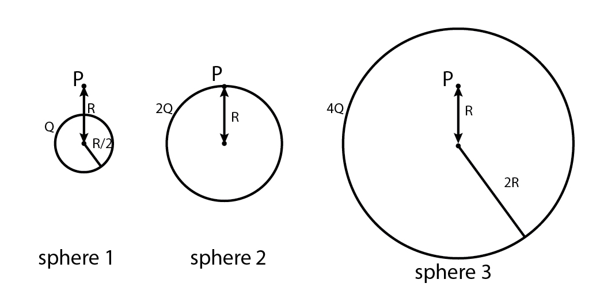
a) $E_{1}> E_{2} > E_{3}$
b) $E_{3}> E_{1} > E_{2}$
c) $E_{2}> E_{1} > E_{3}$
d) $E_{3}> E_{2} > E_{1}$
Solution
For sphere 1 the point P is outside the sphere.
$ \therefore E_{1} = \frac{kQ}{R^{2}}$
For sphere 2 the point P is on the sphere
$\therefore E_{2} = \frac{k2Q}{R^{2}}=\frac{2kQ}{R^{2}}$
For sphere 3 the point P is inside the sphere
$\therefore E_{3} = \frac{k4Q}{\left ( 2R \right )^{2}}=\frac{kQ}{2R^{2}}$
$ \Rightarrow E_2>E_1 >E_3$
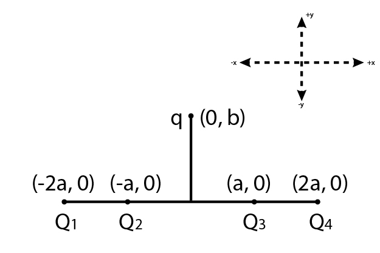
| code | List I | code | List II |
|---|---|---|---|
| P | Q1,Q2,Q3,Q4 – all positive | 1 | +x |
| Q | Q1,Q2- positive Q3,Q4 - negative | 2 | -x |
| R | Q1, Q4- positive Q2,Q3 - negative | 3 | +y |
| S | Q1,Q3- positive Q2,Q4 - negative | 4 | -y |
a) P-3, Q-1, R-4, S-2
b) P-4, Q-2, R-3, S-1
c) P-3, Q-1, R-2, S-4
d) P-4, Q-2, R-1, S-3
Solution
For sphere 1 the point P is outside the sphere.
Case P - Q1,Q2,Q3,Q4 – all positive
Resultant force is in +y direction (3)
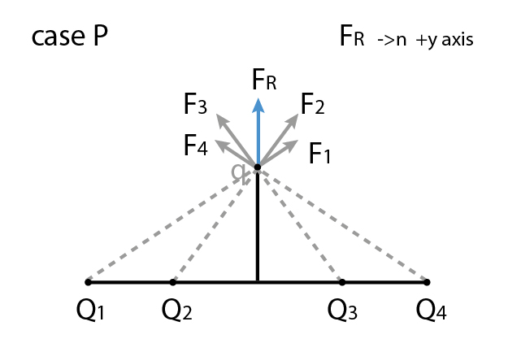
Case Q - Q1,Q2- positive Q3,Q4 – negative
Resultant force is in +x direction (1)
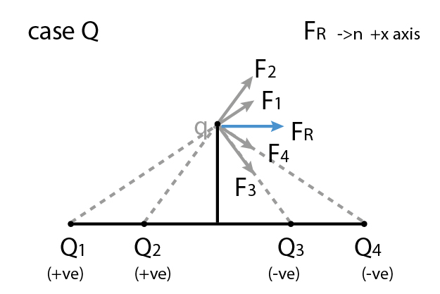
Case R - Q1, Q4- positive Q2,Q3 – negative
Resultant force is in -y direction (4)
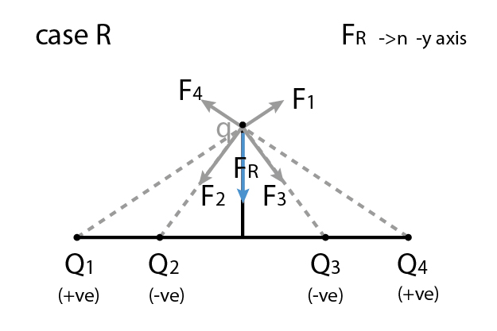
Case S - Q1,Q3- positive Q2,Q4 – negative
Resultant force is in -x direction (2)
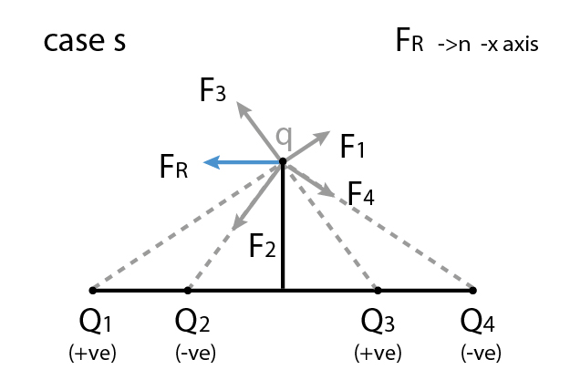
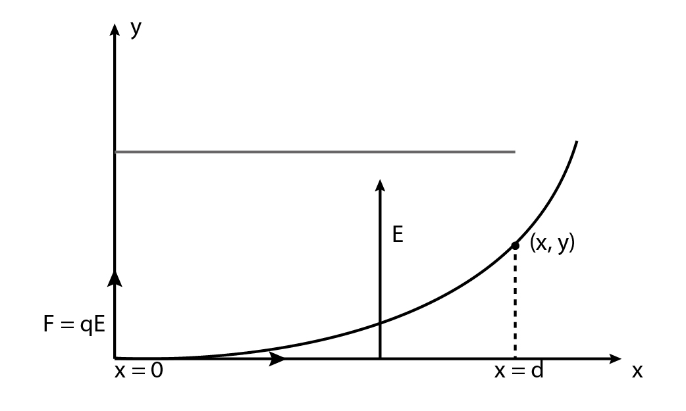
a) $ y = \frac{1}{2}\frac{qEd^{2}}{mV^{2}}$
b) $ y = \frac{qEd^{2}}{mV^{2}}$
c) $ y = \frac{2}{3}\frac{qEd^{2}}{mV^{2}}$
d) $ y = \frac{2qEd^{2}}{mV^{2}}$
Solution
$F = qE $
$a = \frac{qE}{m}$
$x = V t$
$y = \frac{1}{2}at^{2}
= \frac{1}{2}\frac{qEx^{2}}{mV^{2}}$
$= \frac{1}{2}\frac{qEd^{2}}{mV^{2}} (at \; x = d)$